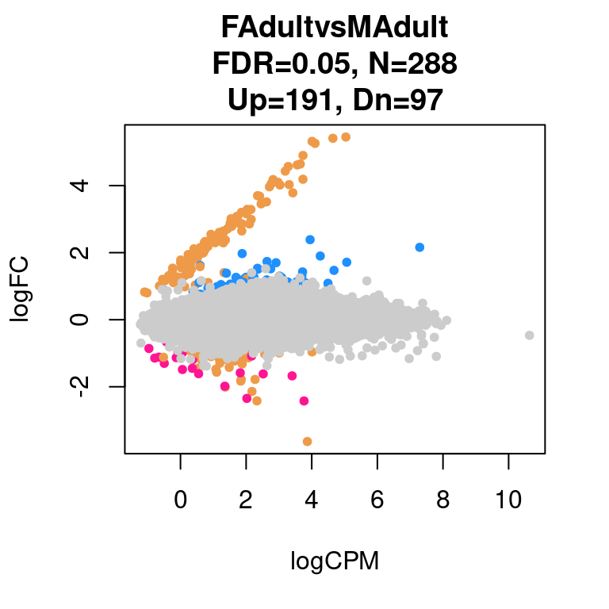
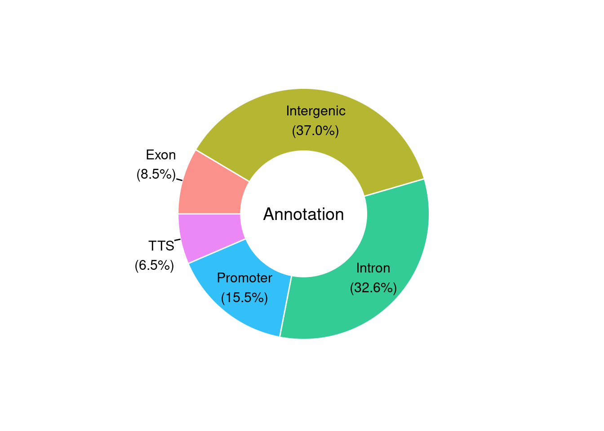
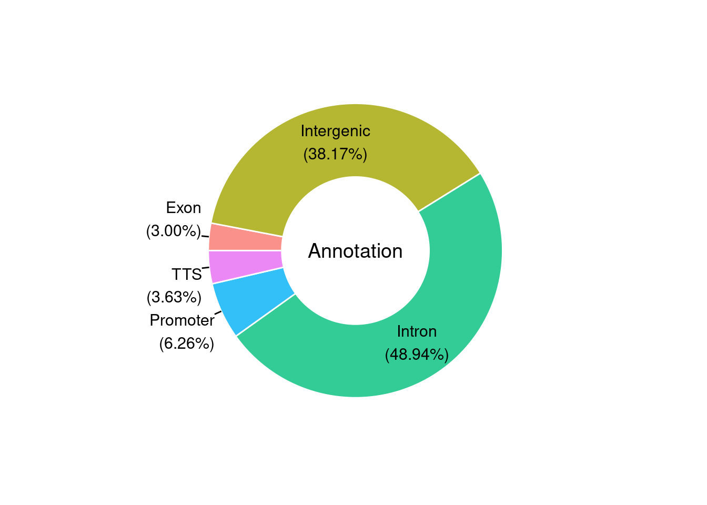
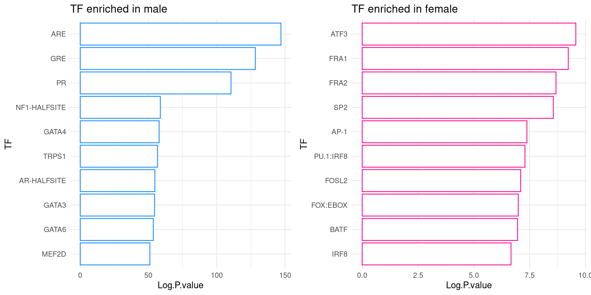

Last updated: 2021-02-19
Checks: 6 1
Knit directory: Human_Development_ATACseq_bulk/
This reproducible R Markdown analysis was created with workflowr (version 1.6.2). The Checks tab describes the reproducibility checks that were applied when the results were created. The Past versions tab lists the development history.
Great! Since the R Markdown file has been committed to the Git repository, you know the exact version of the code that produced these results.
Great job! The global environment was empty. Objects defined in the global environment can affect the analysis in your R Markdown file in unknown ways. For reproduciblity it’s best to always run the code in an empty environment.
The command set.seed(20210216) was run prior to running the code in the R Markdown file. Setting a seed ensures that any results that rely on randomness, e.g. subsampling or permutations, are reproducible.
Great job! Recording the operating system, R version, and package versions is critical for reproducibility.
Nice! There were no cached chunks for this analysis, so you can be confident that you successfully produced the results during this run.
Using absolute paths to the files within your workflowr project makes it difficult for you and others to run your code on a different machine. Change the absolute path(s) below to the suggested relative path(s) to make your code more reproducible.
| absolute | relative |
|---|---|
| /group/card2/Evangelyn_Sim/Transcriptome_chromatin_human/Sequencing_ATAC_RNA/GITHUB/Human_Development_ATACseq_bulk/output/humanATAC_peaks_cov2_rmBL.bed.saf.pe.q30.mx.hum.fix_filt.csv | output/humanATAC_peaks_cov2_rmBL.bed.saf.pe.q30.mx.hum.fix_filt.csv |
| /group/card2/Evangelyn_Sim/Transcriptome_chromatin_human/Sequencing_ATAC_RNA/GITHUB/Human_Development_ATACseq_bulk/output/ATACseq_samplesheet.txt | output/ATACseq_samplesheet.txt |
Great! You are using Git for version control. Tracking code development and connecting the code version to the results is critical for reproducibility.
The results in this page were generated with repository version 294d830. See the Past versions tab to see a history of the changes made to the R Markdown and HTML files.
Note that you need to be careful to ensure that all relevant files for the analysis have been committed to Git prior to generating the results (you can use wflow_publish or wflow_git_commit). workflowr only checks the R Markdown file, but you know if there are other scripts or data files that it depends on. Below is the status of the Git repository when the results were generated:
Ignored files:
Ignored: .Rhistory
Ignored: .Rproj.user/
Untracked files:
Untracked: *.noXYMT.bed.tidy.bed
Untracked: *xls.bg.bed
Untracked: *xls.dn.bed
Untracked: *xls.up.bed
Untracked: Development_noXY.jn.rnk
Untracked: FetalvsYoung_noXY.jn.rnk
Untracked: Homo_sapiens.GRCh38.96.fulllength.saf
Untracked: YoungvsAdult_noXY.jn.rnk
Untracked: analysis/*.dn.bed.homeranno.txt
Untracked: analysis/*.up.bed.homeranno.txt
Untracked: analysis/00.WorkFlowR_setting.R
Untracked: code/EnDrich.R
Untracked: code/EnDrichProc_Development_noXY.R
Untracked: code/EnDrichProc_FetalvsYoung_noXY.R
Untracked: code/EnDrichProc_YoungvsAdult_noXY.R
Untracked: header.sam
Untracked: humanATAC*bed.saf
Untracked: humanATAC*bed.saf.pe.q30.mx
Untracked: humanATAC*bed.saf.pe.q30.mx.all
Untracked: humanATAC*bed.saf.pe.q30.mx.all.fix
Untracked: humanATAC*bed.saf.pe.q30.mx.chr
Untracked: humanATAC*bed.saf.pe.q30.mx.fix
Untracked: humanATAC*bed.saf.pe.q30.mx.hum.fix
Untracked: output/20190801_ATAC_samplesheet.txt
Untracked: output/ATACseq_samplesheet.txt
Untracked: output/atac_hum_tss_pe_mapk30_q30.mx.all_unfiltered.csv
Untracked: output/atac_hum_tss_pe_mapk30_q30.mx.chr
Untracked: output/atac_hum_tss_pe_mapk30_q30.mx.hum.fix_filt.csv
Untracked: output/humanATAC_peaks_cov2_rmBL.bed.saf.pe.q30.mx.MvsF.fix_filt.csv
Untracked: output/humanATAC_peaks_cov2_rmBL.bed.saf.pe.q30.mx.all.fix_filt.csv
Untracked: output/humanATAC_peaks_cov2_rmBL.bed.saf.pe.q30.mx.all_unfiltered.csv
Untracked: output/humanATAC_peaks_cov2_rmBL.bed.saf.pe.q30.mx.hum.fix_filt.csv
Untracked: output/logCPM_humanATAC_peaks_cov2_rmBL.bed.saf.pe.q30.mx.all.fix_filt.csv
Unstaged changes:
Modified: analysis/about.Rmd
Modified: analysis/index.Rmd
Modified: analysis/license.Rmd
Note that any generated files, e.g. HTML, png, CSS, etc., are not included in this status report because it is ok for generated content to have uncommitted changes.
These are the previous versions of the repository in which changes were made to the R Markdown (analysis/07.EdgeR_and_ScatterPlot_Peaks_FvsM.Rmd) and HTML (docs/07.EdgeR_and_ScatterPlot_Peaks_FvsM.html) files. If you’ve configured a remote Git repository (see ?wflow_git_remote), click on the hyperlinks in the table below to view the files as they were in that past version.
| File | Version | Author | Date | Message |
|---|---|---|---|---|
| Rmd | 294d830 | evangelynsim | 2021-02-19 | wflow_publish(c(“analysis/01.Generate_reference_genome.Rmd”, |
In the GEO submission, 4 processed files (peaks) were uploaded.
They have been uploaded in the /output folder and will be used below to generate different figures.
library(edgeR)Loading required package: limmalibrary(limma)
library(dplyr)
Attaching package: 'dplyr'The following objects are masked from 'package:stats':
filter, lagThe following objects are masked from 'package:base':
intersect, setdiff, setequal, unionlibrary(ggplot2)
library(moonBook)
library(webr)
library(waffle)
library(extrafont)Registering fonts with Rlibrary(grid)
library(gridExtra)
Attaching package: 'gridExtra'The following object is masked from 'package:dplyr':
combinelibrary(cowplot)
********************************************************Note: As of version 1.0.0, cowplot does not change the default ggplot2 theme anymore. To recover the previous behavior, execute:
theme_set(theme_cowplot())********************************************************library(ggpubr)
Attaching package: 'ggpubr'The following object is masked from 'package:cowplot':
get_legendlibrary(RColorBrewer)PRIOR = 20
FDR = 0.05
rm1 <- read.csv("/group/card2/Evangelyn_Sim/Transcriptome_chromatin_human/Sequencing_ATAC_RNA/GITHUB/Human_Development_ATACseq_bulk/output/humanATAC_peaks_cov2_rmBL.bed.saf.pe.q30.mx.hum.fix_filt.csv", row.names = 1)
info = read.delim("/group/card2/Evangelyn_Sim/Transcriptome_chromatin_human/Sequencing_ATAC_RNA/GITHUB/Human_Development_ATACseq_bulk/output/ATACseq_samplesheet.txt", header = TRUE, sep = "\t", stringsAsFactors = F)
info = info[c(8:20),]
m = match(info$ID,names(rm1))
rm2 = rm1[,m]
rm1 = rm2
sampleinfo = info
levels(factor(sampleinfo$Group))[1] "Adult"levels(factor(sampleinfo$BinSex))[1] "Adult_F" "Adult_M"table(colnames(rm2)==sampleinfo$ID)
TRUE
13 matrix = rm2
pheno = infoattach(pheno)
design = model.matrix(as.formula("~ 0 + BinSex + Batch"))
detach(pheno)
design BinSexAdult_F BinSexAdult_M Batch
1 0 1 1
2 0 1 1
3 0 1 1
4 0 1 2
5 0 1 2
6 0 1 2
7 0 1 2
8 1 0 2
9 1 0 2
10 1 0 2
11 1 0 2
12 1 0 2
13 1 0 2
attr(,"assign")
[1] 1 1 2
attr(,"contrasts")
attr(,"contrasts")$BinSex
[1] "contr.treatment"D = DGEList(counts=matrix)
D = calcNormFactors(D)
D = estimateGLMCommonDisp(D, design)
D = estimateGLMTagwiseDisp(D, design, prior.df = PRIOR)
fit = glmFit(D, design, prior.count = PRIOR)
Contrast = makeContrasts(FAdultvsMAdult = BinSexAdult_M - BinSexAdult_F,
levels=design)
res = list()
contrast.name = colnames(Contrast)
for(i in 1:length(contrast.name)){
lrt = glmLRT(fit, contrast = Contrast[,i])
results = lrt$table
disp = lrt$dispersion
fitted.vals = lrt$fitted.values
coefficients = lrt$coefficients
results$adj.p.value = p.adjust(p = results$PValue, method = "fdr" )
table(row.names(results) == row.names(fitted.vals))
Name = row.names(results)
res0 = cbind(Name, results, disp, fitted.vals, coefficients)
res[[i]] = res0[order(res0$adj.p.value),]
res[[i]]$Chr= gsub(".*_|:.*$", "", rownames(res[[i]]))
res[[i]] = mutate(res[[i]], cs= ifelse(res[[i]]$adj.p.value <= 0.05 & res[[i]]$logFC <= 0 & res[[i]]$Chr=="X", "tan2",
ifelse(res[[i]]$adj.p.value <= 0.05 & res[[i]]$logFC <= 0 & res[[i]]$Chr=="Y", "tan2",
ifelse(res[[i]]$adj.p.value <= 0.05 & res[[i]]$logFC >= 0 & res[[i]]$Chr=="Y", "tan2",
ifelse(res[[i]]$adj.p.value <= 0.05 & res[[i]]$logFC >= 0 & res[[i]]$Chr=="X", "tan2",
ifelse(res[[i]]$adj.p.value <= 0.05 & res[[i]]$logFC >= 0 ,"dodgerblue1",
ifelse(res[[i]]$adj.p.value <= 0.05 & res[[i]]$logFC <= 0 , "deeppink1", "grey80")))))))
mxFDR = res[[i]][res[[i]]$adj.p.value <= FDR,]
mxFDR_Up = mxFDR[mxFDR$logFC>0,]
mxFDR_Dn = mxFDR[mxFDR$logFC<0,]
res[[i]]= mutate(res[[i]], FDR= nrow(mxFDR))
res[[i]]= mutate(res[[i]], FDRup= nrow(mxFDR_Up))
res[[i]]= mutate(res[[i]], FDRdn= nrow(mxFDR_Dn))
}
for(i in 1:length(contrast.name)){
print(contrast.name[i])
print(table(res[[i]]$adj.p.value < 0.05))
}[1] "FAdultvsMAdult"
FALSE TRUE
97482 288 par(mfrow=c(1,1))
for(i in 1:length(contrast.name)){
plot(res[[i]]$logCPM, res[[i]]$logFC, pch=20, cex=1, col=res[[i]]$cs,
xlab = "logCPM", ylab = "logFC",
main = paste0(contrast.name[i],
"\nFDR=0.05, N=", res[[i]][1,ncol(res[[i]])-2],
"\nUp=",res[[i]][1,ncol(res[[i]])-1],", Dn=",res[[i]][1,ncol(res[[i]])]))
}
#!/bin/bash
set -x
#Create sets of foreground regions in bed format
for XLS in *xls ; do
UP=$XLS.up.bed
DN=$XLS.dn.bed
awk ' $5<0.01 && $2>0 {print $1"\t"$1}' $XLS \
| cut -d '_' -f2- | sed 's/:/\t/' | sed 's/-/\t/' \
| bedtools sort > $UP
awk ' $5<0.01 && $2<0 {print $1"\t"$1}' $XLS \
| cut -d '_' -f2- | sed 's/:/\t/' | sed 's/-/\t/' \
| bedtools sort > $DN
done
#Create a set of background regions from those not changing in any comparison
BG=$XLS.bg.bed
tail -qn +2 *xls \
| awk '$5>0.1 {print $1}' \
| sort | uniq -c \
| cut -d '_' -f2- | tr ':-' '\t' \
| bedtools sort > $BG#!/bin/bash
set -x
REF=/group/card2/Evangelyn_Sim/Transcriptome_chromatin_human/Sequencing_ATAC_RNA/refgenome/Homo_sapiens.GRCh38.96.gtf
#PATH=$PATH:/group/card2/Evangelyn_Sim/NGS/app/homer/.//bin/
for BED in *.up.bed *.dn.bed ; do
OUT=$BED.homeranno.txt
mkdir go/$BED
annotatePeaks.pl $BED hg38 -gtf $REF -go go/$BED -annStats $BED.stats.txt > $OUT
donefiles = list.files(path = "/group/card2/Evangelyn_Sim/Transcriptome_chromatin_human/Sequencing_ATAC_RNA/20180726_hATACseq_MF/R/5.pks.mg.mapq30.rmBL.q30/6.pkstats/p001_MvF_20200624", pattern = ".stats.txt", full.names = T)
mx = lapply(files, read.delim, header=T, stringsAsFactors = F)
for(i in 1:length(mx)){
mx[[i]] = mx[[i]][c(1:5),]
mx[[i]]$Number.of.peaks = as.numeric(mx[[i]]$Number.of.peaks)
mx[[i]]$totalpeaks = sum(mx[[i]]$Number.of.peaks)
mx[[i]]$percentage = round(mx[[i]]$Number.of.peaks/sum(mx[[i]]$Number.of.peaks) *100, digits = 2)
print(PieDonut(mx[[i]],aes(Annotation,count=Number.of.peaks),r0=0.5,start=3*pi/2,labelpositionThreshold=0.1, showPieName = T, showDonutName = T,
title = gsub("/group/card2/Evangelyn_Sim/Transcriptome_chromatin_human/Sequencing_ATAC_RNA/20180726_hATACseq_MF/R/5.pks.mg.mapq30.rmBL.q30/6.pkstats/p001_MvF_20200624/edgeR_ATAC_pks_all_hum_MvF_|.xls|.bed.stats.txt", "", files[[i]])))
}
#!/bin/bash
set -x
CWD=/group/card2/Evangelyn_Sim/Transcriptome_chromatin_human/Sequencing_ATAC_RNA/20180726_hATACseq_MF/R/5.pks.mg.mapq30.rmBL.q30/7.homer/p001_all
echo $CWD
REF=/group/card2/Evangelyn_Sim/Transcriptome_chromatin_human/Sequencing_ATAC_RNA/refgenome/Homo_sapiens.GRCh38.dna_sm.primary_assembly.fa
#PATH=$PATH:/home/esim/software/.//bin/
#Create sets of foreground regions in bed format
for XLS in *xls ; do
UP=$XLS.up.bed
DN=$XLS.dn.bed
awk ' $5<0.01 && $2>0 {print $1"\t"$1}' $XLS \
| cut -d '_' -f2- | sed 's/:/\t/' | sed 's/-/\t/' \
| bedtools sort > $UP
awk ' $5<0.01 && $2<0 {print $1"\t"$1}' $XLS \
| cut -d '_' -f2- | sed 's/:/\t/' | sed 's/-/\t/' \
| bedtools sort > $DN
done
#Create a set of background regions from those not changing in any comparison
BG=$XLS.bg.bed
tail -qn +2 *xls \
| awk '$5>0.1 {print $1}' \
| sort | uniq -c \
| awk '$1~/6/ {print $2}' \
| cut -d '_' -f2- | tr ':-' '\t' \
| bedtools sort > $BG
cd $CWD
#Call Homer enriched motifs with default background, then with ATAC peak BG
for FG in *up.bed *dn.bed ; do
cd $CWD
BED=$CWD/$FG
#find enriched motifs
findMotifsGenome.pl $FG $REF $FG.df.out -p 10 -keepFiles
cd $FG.df.out
rm -rf instances
mkdir instances
cd instances
for i in ../homerResults/motif*.motif ; do
BASE=`basename $i`
mkdir $BASE
findMotifsGenome.pl $BED $REF $BASE -find $i | sort -k6gr > $BASE/$BASE &
done
cd $CWD
done
wait
cd $CWD
#Call Homer enriched motifs with ATAC peak BG
for FG in *up.bed *dn.bed ; do
cd $CWD
BED=$CWD/$FG
#find enriched motifs
findMotifsGenome.pl $FG $REF $FG.out -bg $BG -p 10 -keepFiles
#find instances of enriched motifs
cd $FG.out
rm -rf instances
mkdir instances
cd instances
for i in ../homerResults/motif*.motif ; do
BASE=`basename $i`
mkdir $BASE
findMotifsGenome.pl $BED $REF $BASE -find $i | sort -k6gr > $BASE/$BASE &
done ; wait
cd $CWD
done
for MOTIF in `find . | grep instances | grep motif$` ; do
OUT=$MOTIF.bed
awk '{print $1,$2,length($3)}' $MOTIF \
| grep -v PositionID | cut -d '_' -f2 \
| tr ':' '\t' | sed 's/-/\t/' \
| awk '{printf "%s\t%.0f\t%.0f\n", $1,(($2+$3)/2)+$4-10,(($2+$3)/2)+$4+10}' > $OUT
donemx1 = read.delim("/group/card2/Evangelyn_Sim/Transcriptome_chromatin_human/Sequencing_ATAC_RNA/20180726_hATACseq_MF/R/5.pks.mg.mapq30.rmBL.q30/7.homer/p001_human_MvF_20200624/edgeR_ATAC_pks_all_hum_MvF_FAdultvsMAdult.xls.up.bed.df.out/knownResults.txt", header=TRUE, sep = "\t")
colnames(mx1) = c("Motif.Name","Consensus","P.value","Log.P.value",
"q.value..Benjamini.","Peak.number","Peak.number.with.Motif",
"Background.number", "Background.number.with.Motif")
mx1$TF = gsub("[(].*", "", mx1$Motif.Name)
mx1$TF = gsub("/.*", "", mx1$TF)
mx1$TF = gsub("PGR","PR", mx1$TF)
mx1$Log.P.value = -(mx1$Log.P.value)
mx1 = mx1[!duplicated(mx1$TF),]
mx1 = mx1[c(1:10),]
mx1 = mx1[order(mx1$Log.P.value),]
mx1$TF = toupper(mx1$TF)
mx1$TF = factor(mx1$TF, levels = mx1$TF)
s1 = ggplot(mx1, aes(TF, Log.P.value, color=Log.P.value))+
geom_bar(stat = "identity", fill="white", color="dodgerblue1") +
labs(title = "TF enriched in male")+
theme_minimal()+
coord_flip()
mx2 = read.delim("/group/card2/Evangelyn_Sim/Transcriptome_chromatin_human/Sequencing_ATAC_RNA/20180726_hATACseq_MF/R/5.pks.mg.mapq30.rmBL.q30/7.homer/p001_human_MvF_20200624/edgeR_ATAC_pks_all_hum_MvF_FAdultvsMAdult.xls.dn.bed.df.out/knownResults.txt", header=TRUE, sep = "\t")
colnames(mx2) = c("Motif.Name","Consensus","P.value","Log.P.value",
"q.value..Benjamini.","Peak.number","Peak.number.with.Motif",
"Background.number", "Background.number.with.Motif")
mx2$TF = gsub("[(].*", "", mx2$Motif.Name)
mx2$TF = gsub("/.*", "", mx2$TF)
mx2$Log.P.value = -(mx2$Log.P.value)
mx2 = mx2[!duplicated(mx2$TF),]
mx2 = mx2[c(1:10),]
mx2 = mx2[order(mx2$Log.P.value),]
mx2$TF = toupper(mx2$TF)
mx2$TF = factor(mx2$TF, levels = mx2$TF)
s2 = ggplot(mx2, aes(TF, Log.P.value, color=Log.P.value))+
geom_bar(stat = "identity", fill="white", color="deeppink1") +
labs(title = "TF enriched in female")+
theme_minimal()+
coord_flip()multi = arrangeGrob(s1,s2,
ncol = 2, nrow = 1)
plot = as_ggplot(multi)
plot
sessionInfo()R version 3.6.1 (2019-07-05)
Platform: x86_64-pc-linux-gnu (64-bit)
Running under: CentOS Linux 7 (Core)
Matrix products: default
BLAS: /hpc/software/installed/R/3.6.1/lib64/R/lib/libRblas.so
LAPACK: /hpc/software/installed/R/3.6.1/lib64/R/lib/libRlapack.so
locale:
[1] LC_CTYPE=en_US.UTF-8 LC_NUMERIC=C
[3] LC_TIME=en_US.UTF-8 LC_COLLATE=en_US.UTF-8
[5] LC_MONETARY=en_US.UTF-8 LC_MESSAGES=en_US.UTF-8
[7] LC_PAPER=en_US.UTF-8 LC_NAME=C
[9] LC_ADDRESS=C LC_TELEPHONE=C
[11] LC_MEASUREMENT=en_US.UTF-8 LC_IDENTIFICATION=C
attached base packages:
[1] grid stats graphics grDevices utils datasets methods
[8] base
other attached packages:
[1] RColorBrewer_1.1-2 ggpubr_0.4.0 cowplot_1.0.0 gridExtra_2.3
[5] extrafont_0.17 waffle_0.7.0 webr_0.1.5 moonBook_0.2.3
[9] ggplot2_3.3.2 dplyr_1.0.2 edgeR_3.26.8 limma_3.40.6
[13] workflowr_1.6.2
loaded via a namespace (and not attached):
[1] nlme_3.1-150 fs_1.5.0 insight_0.9.0
[4] rprojroot_1.3-2 tools_3.6.1 backports_1.1.10
[7] R6_2.5.0 DT_0.14 sjlabelled_1.1.6
[10] colorspace_1.4-1 withr_2.3.0 tidyselect_1.1.0
[13] mnormt_1.5-6 extrafontdb_1.0 curl_4.3
[16] compiler_3.6.1 git2r_0.27.1 flextable_0.5.10
[19] xml2_1.3.2 officer_0.3.12 labeling_0.4.2
[22] scales_1.1.1 lmtest_0.9-38 psych_1.9.12.31
[25] readr_1.4.0 systemfonts_0.2.3 stringr_1.4.0
[28] digest_0.6.27 foreign_0.8-71 editData_0.1.2
[31] rmarkdown_2.5 rio_0.5.16 base64enc_0.1-3
[34] pkgconfig_2.0.3 htmltools_0.5.0 fastmap_1.0.1
[37] highr_0.8 rvg_0.2.5 htmlwidgets_1.5.2
[40] rlang_0.4.7 readxl_1.3.1 rstudioapi_0.11
[43] shiny_1.5.0 farver_2.0.3 generics_0.1.0
[46] zoo_1.8-8 jsonlite_1.7.0 zip_2.1.1
[49] car_3.0-10 magrittr_1.5 Rcpp_1.0.5
[52] munsell_0.5.0 abind_1.4-5 gdtools_0.2.2
[55] lifecycle_0.2.0 stringi_1.5.3 whisker_0.4
[58] yaml_2.2.1 carData_3.0-4 MASS_7.3-51.6
[61] parallel_3.6.1 promises_1.1.1 sjmisc_2.8.5
[64] forcats_0.5.0 crayon_1.3.4 miniUI_0.1.1.1
[67] lattice_0.20-41 haven_2.3.1 hms_0.5.3
[70] locfit_1.5-9.4 knitr_1.30 pillar_1.4.6
[73] uuid_0.1-4 ggsignif_0.6.0 glue_1.4.2
[76] evaluate_0.14 data.table_1.13.2 vcd_1.4-8
[79] vctrs_0.3.2 tweenr_1.0.1 httpuv_1.5.4
[82] Rttf2pt1_1.3.8 cellranger_1.1.0 gtable_0.3.0
[85] purrr_0.3.4 polyclip_1.10-0 tidyr_1.1.2
[88] xfun_0.18 ggforce_0.3.2 openxlsx_4.2.3
[91] mime_0.9 xtable_1.8-4 broom_0.7.0
[94] rstatix_0.6.0 later_1.1.0.1 tibble_3.0.3
[97] shinyWidgets_0.5.4 rrtable_0.2.1 ellipsis_0.3.1
[100] ztable_0.2.0 devEMF_3.8